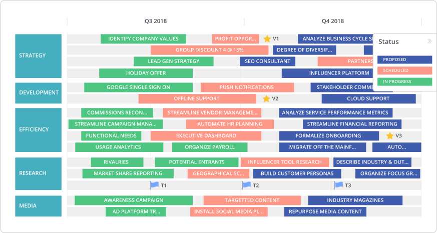
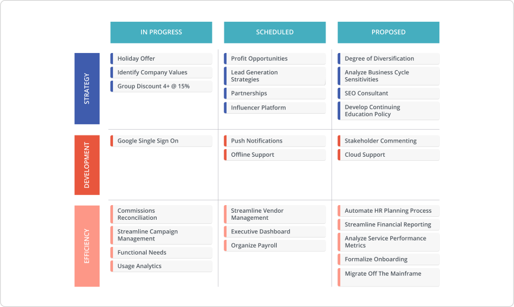
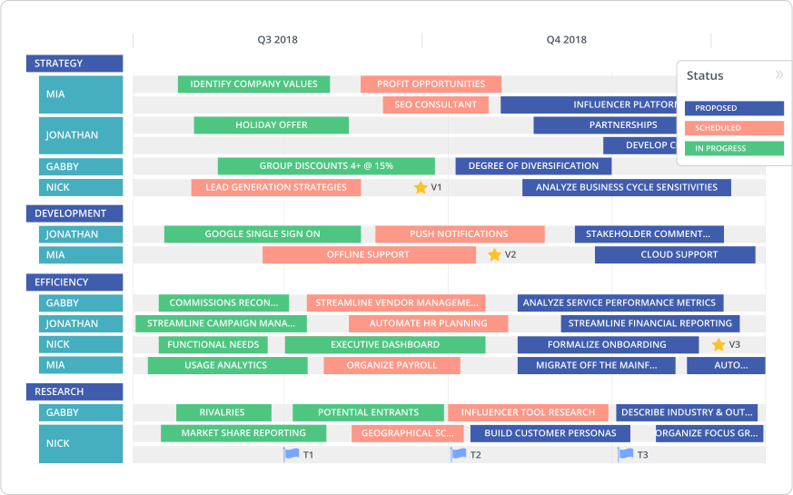
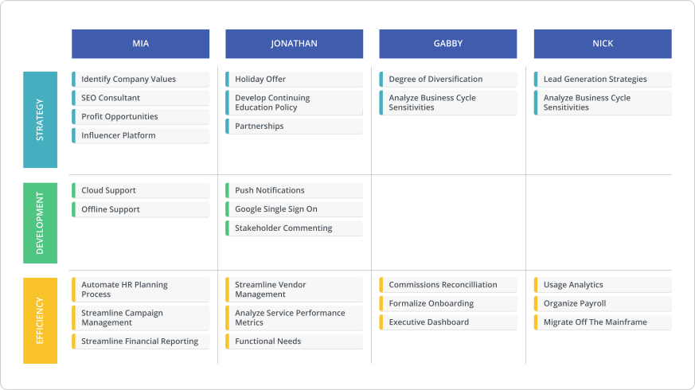
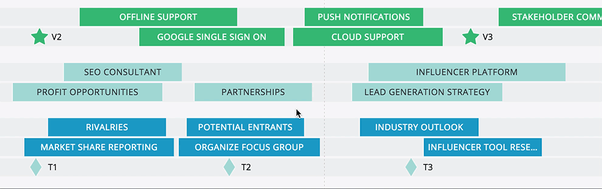
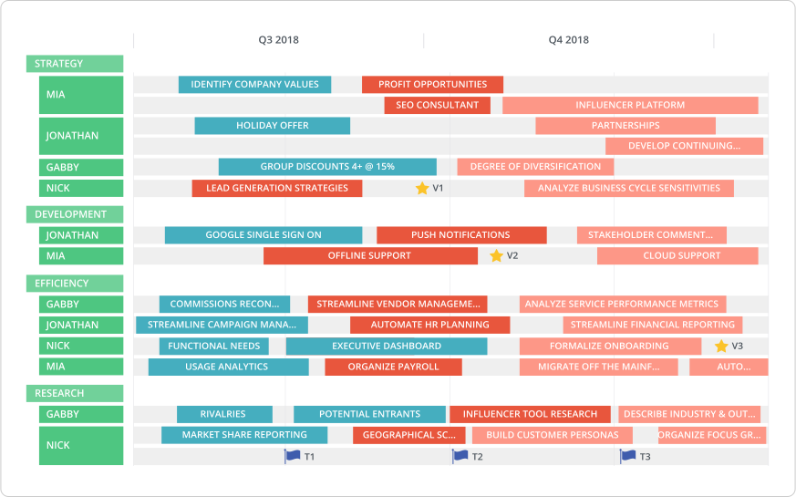

Roadmapping doesn’t end once you’ve built your roadmap. The purpose of your roadmap is to visualize a transparent plan across your organization.
To ensure your roadmap is effective (and actually, you know, executed), you’ll need to align each team in a roadmap presentation.
Basically, your roadmap is just words on a page (or screen or whiteboard or wall) until it’s been validated in some form of roadmap presentation or meeting. During a well-executed roadmap presentation, you have the chance to show stakeholders that you understand their motivations — and they have a chance to publicly affirm their alignment. But if your presentation flops, so might your product or marketing strategy.
What is a roadmap presentation?
The most important point to remember before your roadmap presentation: this is not the place to get buy-in for your plans. That might seem contradictory. (After all, we just described roadmap presentations as an opportunity for stakeholders to “publicly affirm their alignment.”) But it should be just that: an affirmation of alignment that was already established prior to the meeting.
(If you’re butting heads over the alignment process itself, we’ve written about how to get roadmap buy-in from each department. And, more specifically, how to get buy-in from executives.)
A roadmap presentation is far more than the words you actually say. Think of it as an alignment exercise whose success depends on what happens before, during and after you take the stage.
This is an essential chance to understand stakeholder motivations and forge consensus before moving forward with your plans.
To get nuts-and-bolts-y, we’ve found that roadmap presentations generally fall into one of two categories:
Short-term updates
Taking place weekly or biweekly, these frequent syncs tend to get in the weeds, covering the particularities of what’s getting built and how that affects other departments. This type of sit-down would be more common on smaller teams. And because these catch-ups happen regularly, formal buy-in before the presentation is not imperative. But the roadmap still needs to be communicated prior to the meeting to avoid any major surprises or backlash.
Long-term updates
For bigger organizations and teams, the roadmap presentation will likely happen monthly, bimonthly or even quarterly. For these conversations, buy-in before the meeting is critical. These meetings can often involve high-stakes projects that rely on massive alignment and dependencies. Show up to your presentation without everyone on board, and you’ll probably leave feeling pretty beat-up.
Before your roadmap presentation: How to prepare
When it comes to roadmap presentations, the pre-game is just as important as the main event. There are three areas you should learn inside-out to ensure a productive meeting:
Know the high-level strategy
Let’s use a product roadmap as an example. You’re going to build feature X, Y and Z — but what’s the big-picture goal those features address? Without being able to speak to the high-level strategy — and the tradeoffs that must be made to prioritize within that strategy — everyone will just start asking for whatever is most advantageous to them. Be able to speak to product vision and company vision — and how your roadmap aligns with both targets.
Check out Roadmunk's free, ready-to-use product roadmap template and make it your own.
Know the stakeholders
We mean actually get to know them: their motivations, their deadlines, their pressures, what’s keeping them up at night. Again, trust is crucial. For example, marketing and sales needs to feel that product decisions are sound — otherwise they might go rogue. This won’t happen overnight. But it’s important to invest the time.
Know the resource constraints
One of the most common (inevitable?) pushbacks you’re going to get is related to time. “Why can’t we move faster?” To counter this complaint, it’s absolutely crucial that you have an inside-out knowledge of your resources at any given time. You must be able to clearly articulate the resources required to execute a given task — and the tradeoffs that will be made if you swap in something else. It can also be useful to discuss historical timelines, reminding the room of how long things have taken in the past.
During your roadmap presentation: What to actually present
There’s no one way to slice your roadmap. So what should you actually show during your roadmap presentation? We can’t tell you exactly how to build a roadmap that suits your particular organization (that’s where our template library comes in handy), but we do recommend that you aim to meet at least a few of the following criteria:
1. Flexibility: Does your roadmap distinguish between what’s planned and what’s still TBD?
2. Personalization: Does it address the individual needs of each department and/or stakeholder?
3. Collaboration: Can you iterate on the roadmap during the presentation itself?
4. Clarity + Attractiveness: Does it look good? Is the plan visualized in a clear manner? Don’t underestimate the power of good design.
Below, we’ve included some options for structuring your roadmap for your presentation. With a dedicated roadmapping tool like Roadmunk, you can easily create and present multiple pivots of the same data.
1. Flexibility
It’s helpful to communicate which initiatives are actually in the pipeline, and which are still subject to change. One of our favourite ways to structure a roadmap is to organize items by In Progress, Scheduled and Proposed. If your organization works on a timeline, you can simply colour code the items on your roadmap.

If your organization prefers to avoid timelines, you could also create a Swimlane View with the headers In Progress, Scheduled or Proposed.

Like the way this roadmap looks? It's a Roadmunk template. Check our library of 25+ templates here.
We’ve found this roadmap structure very effective for reducing backlash during a roadmap presentation. Stakeholders get a clear and immediate visual indication of which features are actually committed, and which are still being decided. Overall, it means you’re less likely to hear knee-jerk peanut gallery protestations.
2. Personalization
As we mentioned above, it can also be effective to visualize ownership during your roadmap presentation. A great way to do this is to organize your roadmap by department or even by the individual responsible for each task.
The roadmap below includes the same data as the roadmaps above, but we’ve included subheaders indicating individual ownership over each project.

If you really want to get granular with ownership, you could create a Swimlane View roadmap that highlights department, resource or individual owner. This puts the focus on who’s doing what for which department — not the timeline.

3. Collaboration
There’s a reason why the sticky-notes-on-a-wall method is such an enduring way to make a roadmap: it’s easy to change things up on the fly. Although you’d ideally have buy-in for your roadmap before the presentation, your meeting will go much smoother if you are also able to update your roadmap during the conversation.

With a tool like Roadmunk, you can easily add comments or adjust your roadmap directly within the app during the meeting. This makes for a much more dynamic and participatory presentation.
4. Clarity + Attractiveness
The core purpose of your roadmap is to visualize your strategy and make it crystal-clear to everyone in your organization. “Make something pretty!” may sound trite, but you’ll undermine your end-goal if your roadmap is unattractive or unclear.

Start building beautiful + collaborative roadmaps with Roadmunk. Signup for a free trial here.
Obviously, the content of your roadmap is more important than the appearance of your roadmap. But it will be a lot easier to highlight key information — no matter how complicated — if your visualization is easy on the eyes. Also recommended: custom branding.
What pushback should you prep for?
No matter how much you prepare, there are some common points of friction that come up again and again in roadmap meetings. A great way to ace your presentation: prepare for the pushback before it starts pushing. Here are some common questions to expect.
Are you actually going to achieve this timeline?
You’ll most frequently hear this from sales or execs. They want to confirm that your roadmap is realistic so they can plan accordingly. If you have a history of late delivery, be prepared to address why this time will be different. (Then make sure you deliver.)
How can we scope this down?
Just because stakeholders are skeptical that you can hit your deadlines doesn’t mean they don’t want things to go faster. One way to ship features quicker: scope them down. Especially at startups, executives might push the “M” in MSP when they see scope creep getting out of hand. Be prepared to answer why you’ve scoped each feature to its current specs — and be flexible when it’s possible to scope things down.
What’s the value of this roadmap?
Don’t just speak to the qualitative value of each new feature. Be prepared with hard numbers. How will this roadmap help achieve your revenue targets? What specific clients or market segment does it address? You should be able to tie items on your roadmap to specific dollar-sign potential, and articulate value vs. effort.
What are the maintenance costs going to be?
The cost of maintenance is one of the things most commonly neglected on the roadmap — even though it’s one of the most important and resource-draining aspects of any organization. Expect more technically inclined team members to pipe up with maintenance questions, or simply visualize maintenance initiatives directly on your roadmap.
Where are the risks or dependencies?
Sure, the roadmap looks great. But what factors could derail its execution? What risks does each stakeholder need to be aware of, and how will that affect their department’s ability to reach their targets? Also, what steps can stakeholders take to pitch in and mitigate those dangers? The more honest you are about the realities facing your roadmap, the more likely you’ll build trust — and get buy-in for your plan.
What happens after the presentation?
Alignment is a continuous process. It doesn’t just end when your meeting is finished. Make sure you follow up your roadmap presentation with thorough meeting notes and the updated roadmap. Create a concrete space — whether it’s within an email, a shared document, or your roadmap itself — where stakeholders can share feedback.
Reminder! The Number 1 way to fail your roadmap presentation is to not talk to anyone beforehand. Your presentation is all about alignment. Set the tone before your presentation by talking to — and, more importantly listening to — each stakeholder.